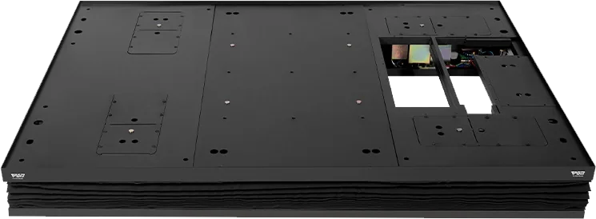

DGPT001 8-way motion platform.
The DGPT001 platform provides eight practice lie modes for slope training. Compare its published dimensions, load and electrical requirements with your room and simulator configuration before specifying an installation.

DGPT001 catalog specifications.
| Item | Published information |
|---|---|
| Model | DGPT001 |
| Size | 1,786 × 1,291 × 190 mm |
| Weight | 169.5 kg |
| Catalog “Max Angle” entry | 125 mm / 7° |
| Maximum load | 350 kg |
| Power supply | 230 V, 50 Hz |
| Power consumption | Standby 30 W / operating 500 W |
Source: PGM simulator catalog (PDF, 19 MB), printed page 25 / PDF page 26. Reviewed 12 November 2026.
Eight listed practice lies.
- Uphill lie and downhill lie.
- Left uphill and right uphill.
- Left downhill and right downhill.
- Ball above feet and ball below feet.
Use the selected training software and control arrangement to define how these modes are used in your setup. Confirm the supplied software, compatible controls and commissioning procedure with the equipment.
Allow for the complete platform installation.
Compare the published platform height with the finished hitting surface and surrounding floor. Review delivery access using packed dimensions and weight, and ask your installation team to assess the floor, positioning and required clearance.
The catalog lists 230 V, 50 Hz. Confirm the exact version and compatible local electrical supply before ordering. The platform’s dimensions do not define the complete safe swing area around a golfer.
PGM’s Performance package lists an eight-way motion swing plate. For a component purchase or an upgrade, identify your detector, software and computer so compatibility and the required control arrangement can be reviewed.
Discuss the equipment and your project.
Include your simulator model, software, room dimensions, destination and the planned finished floor arrangement.